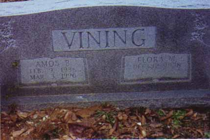
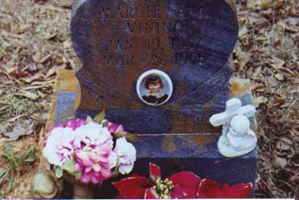
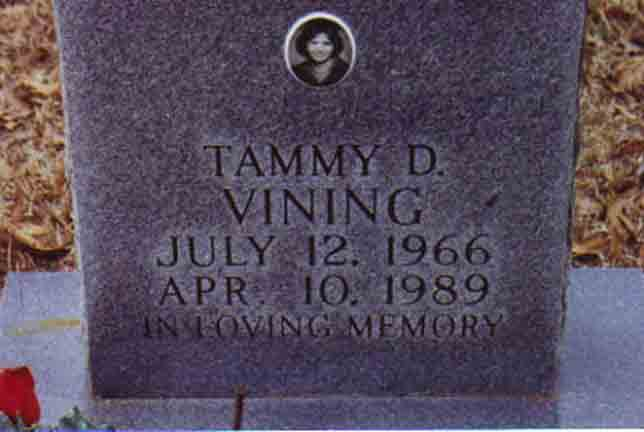
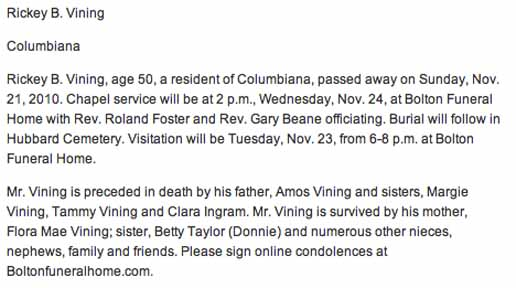

Documentation for Amos Boyd Vining - Flora Mae McDonald
Death Data
Headstone for Amos Boyd Vining and Flora Mae (McDonald) Vining, in Hubbard Cemetery, Shelby County, Alabama (source: Find A Grave):

Gravestone for Margie Ann Vining, daughter of Amos Boyd Vining and Flora Mae (McDonald) Vining, in Hubbard Cemetery, Shelby County, Alabama (source: Find A Grave):

Gravestone for Tammy Darlene Vining, daughter of Amos Boyd Vining and Flora Mae (McDonald) Vining, in Hubbard Cemetery, Shelby County, Alabama (source: Find A Grave):

Obituary (newspaper not identified) for son Rickey B. Vining:
